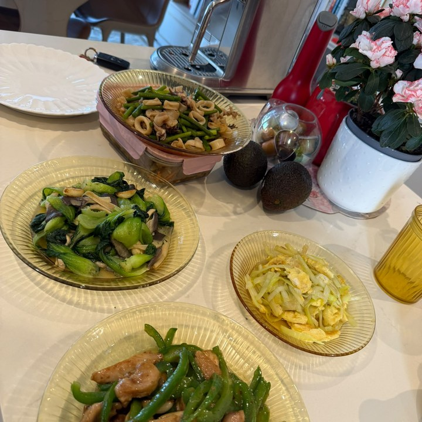
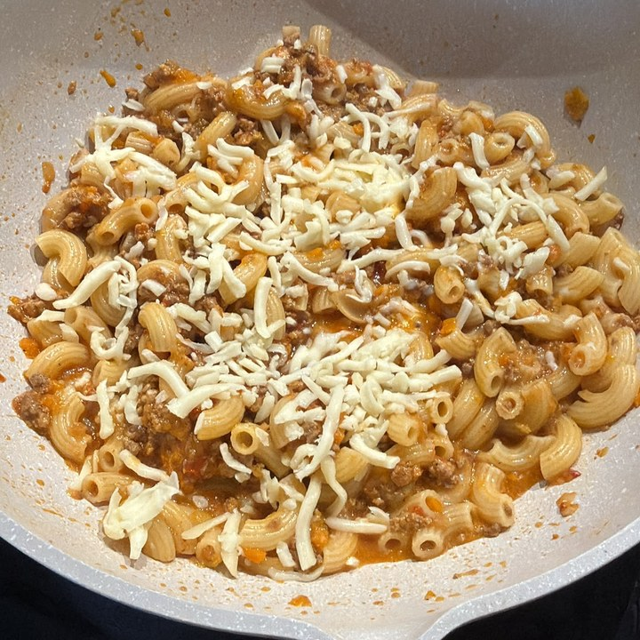
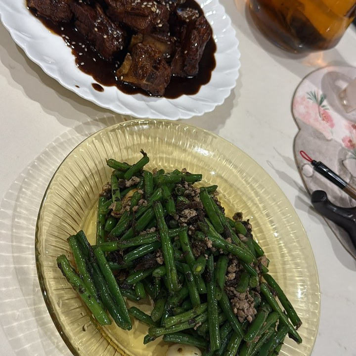
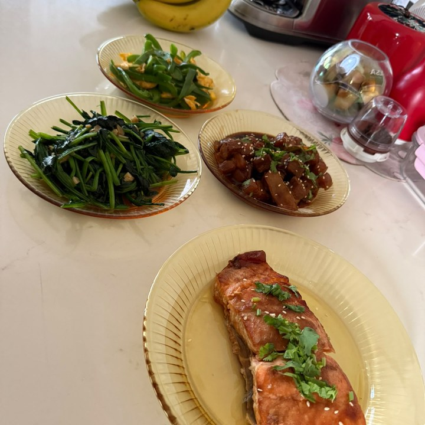
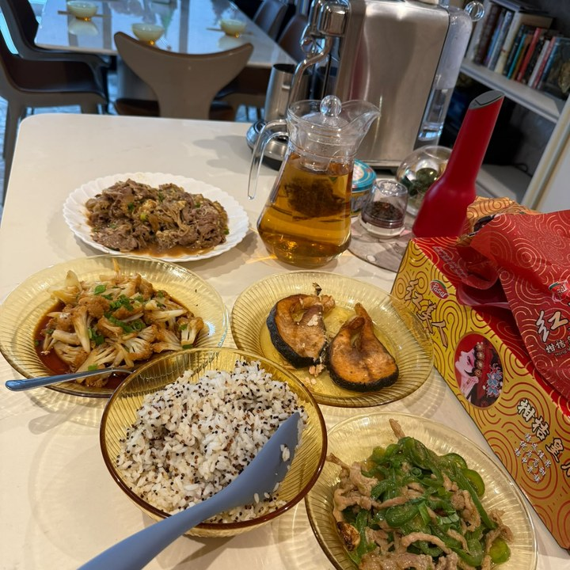
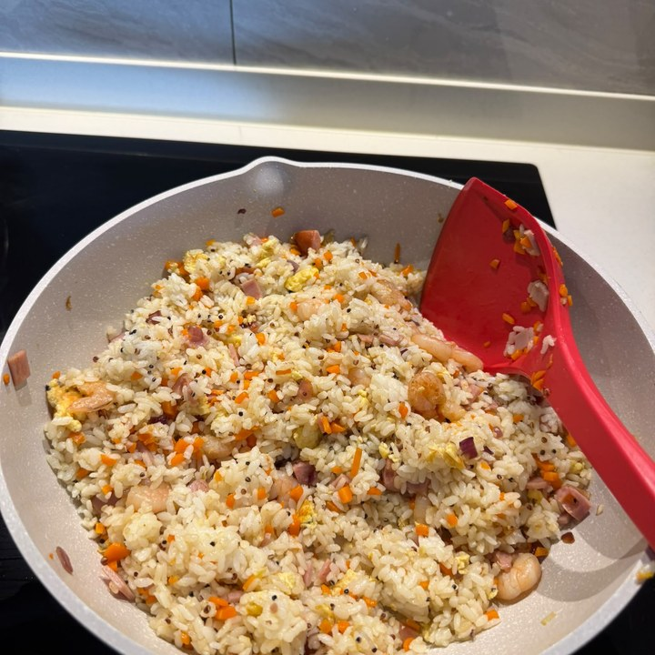

Filipino · 35 · Chinese home cooking & household
Six years with one family in Hong Kong, then a two-year Singapore contract served in full — two years cooking Chinese for a family of five, which she did not renew only because their children had grown up.
Trust signals
At a glance
The essentials
Available from
2 December 2026. Transfer within Singapore.
Two years, one Singapore family
November 2024 to November 2026 — a Chinese family in a private flat: the cooking, the household, their pets and their children. The contract ran its full term.
Six years in Hong Kong
2018 to 2024 — one family of four, with a boy of nine and a girl of seven. On her own account; it is not on her Singapore record.
Where she is now
She started with a family on 2 November and leaves on 2 December. She told them in the first week that she could not meet what the household needed, and they agreed she would go.
Cooking
Chinese home food, cooked daily for two years — steamed and fried fish, pork and peppers, greens with garlic, fried rice, braised ribs. Photographs below.
Children
A boy of nine and a girl of seven in Hong Kong, over six years. In Singapore her household’s children were already teenagers.
Before domestic work
Five years of housekeeping for a company in Makati, 2013 to 2018 — cleaning and sanitising to a standard, before she ever ran a home.
Pets
Not pets now, though her Singapore contract was registered for them. Worth asking her about.
Hong Kong from 2018, Singapore since November 2024.
2018 to 2024 — six years in Hong Kong. One family of four, with two children — a boy of nine and a girl of seven. General cleaning, the bathrooms, the laundry and the kitchen. Six years in one home is the longest thing on her record, and it rests on her own account because Hong Kong work does not appear on a Singapore employment record.
November 2024 to November 2026 — two years. A Chinese family in a private flat: madam, sir and three children, twins of fifteen and an elder of twenty-five. She cooked Chinese for them daily and ran the household, and her record carries the care of their pets and of a child alongside it. She did not renew because the children had grown and the eldest had gone back to China, so the family no longer needed a helper. The contract was served to its end date.
2 November to 2 December 2026 — one month. She went straight into another household after her contract ended. Within the first week she told her employer she could not meet what that home needed, and they agreed she would leave. We would rather say that plainly than leave a family to find a one-month registration on her record and wonder about it.
2013 to 2018. Five years of housekeeping for a company in Makati before she went abroad.
Where she’d suit next. A family who want Chinese home cooking and a house kept properly — she did both for two years and the photographs below are her own. She has had a boy and a girl from primary-school age in Hong Kong. Not pets.
Her employment record and her full work history are available to interested families, with her consent.
Photographs Geneve took of her own cooking — the Chinese home food she cooked daily for two years.






Tell us a little about your household and we’ll be in touch within 1–2 business days. We’ll only move forward if it feels like a genuine fit.